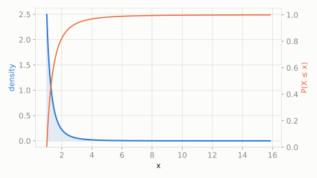

In a make-believe kingdom, most families own a modest plot of land, but a handful of families own absolutely enormous estates.
What fraction of families own more than 3 times the smallest possible plot?
scipy.stats.pareto
The '80/20 rule' distribution -- a small number of cases account for most of the total. It has a long, heavy tail: values far above the minimum are rare but not negligible, which is exactly the shape of wealth, city sizes, and file sizes.
| parameter | default used here | meaning |
|---|---|---|
b | 2.5 | shape -- how quickly the tail thins out |
In a make-believe kingdom, most families own a modest plot of land, but a handful of families own absolutely enormous estates.
What fraction of families own more than 3 times the smallest possible plot?
scipy.statsimport scipy.stats as stats
import numpy as np
dist = stats.pareto(b=2.5)
print('P(land > 3x minimum):', round(dist.sf(3), 4))